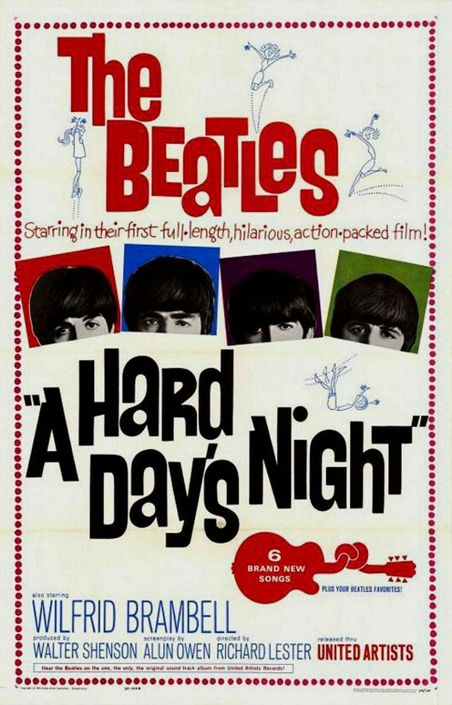
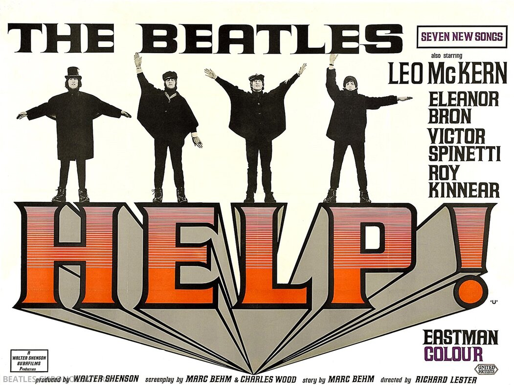
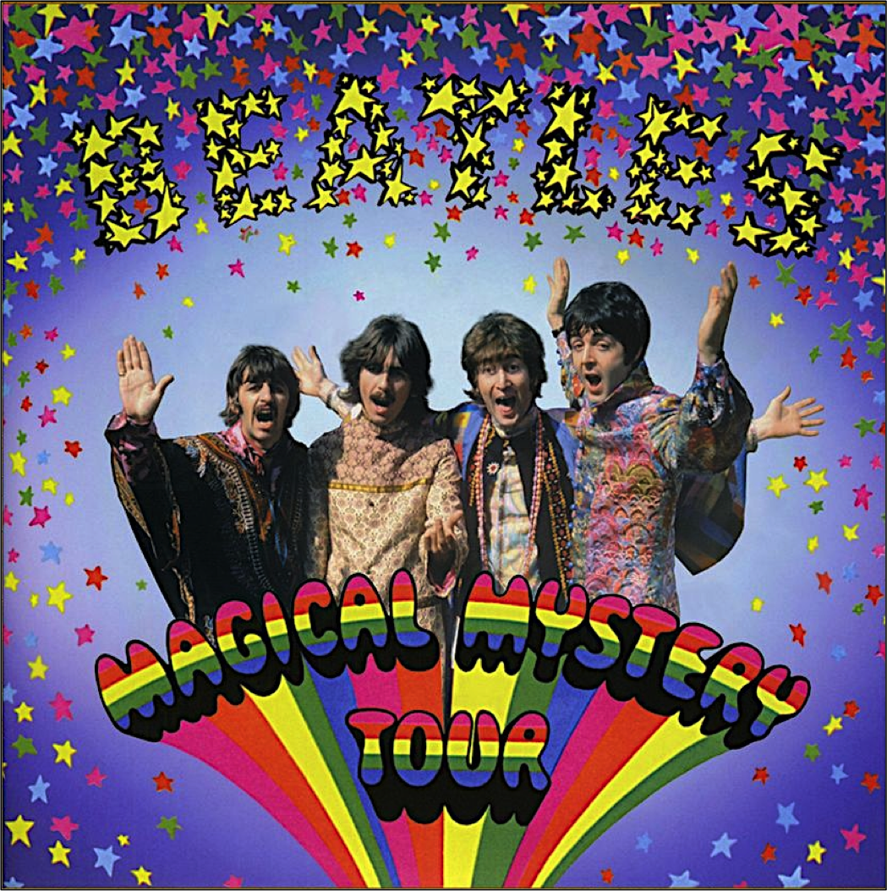
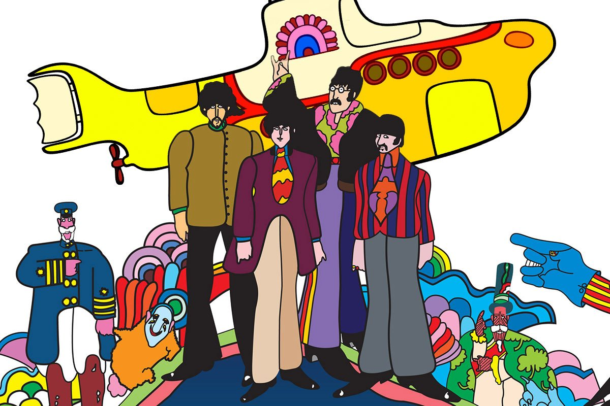
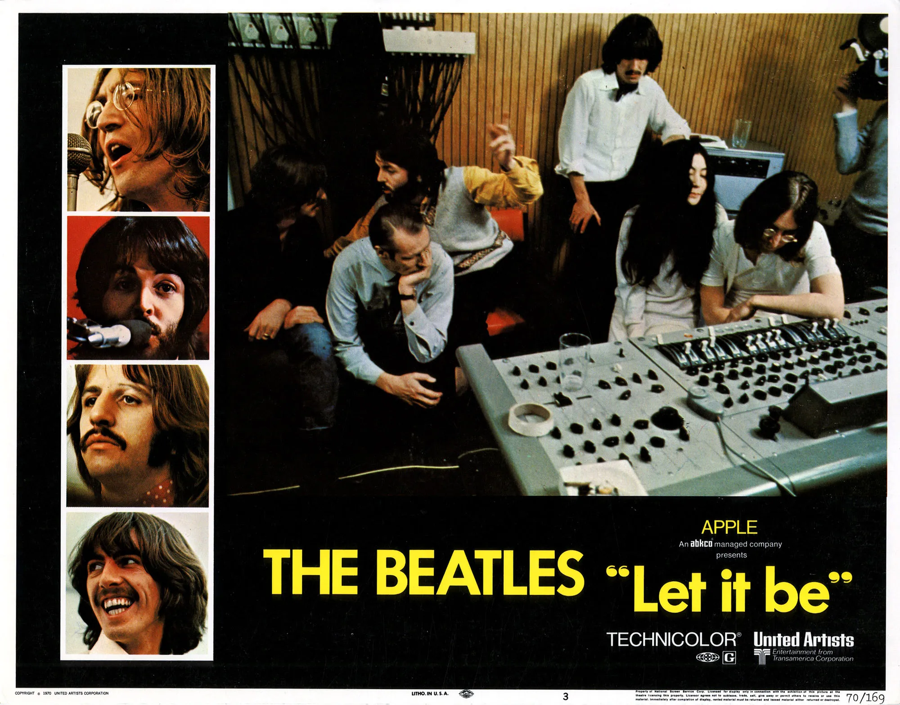

Фильмография | Общая информация | История | Дискография | Главная | Источники
| Год | Русское название | Оригинальное название | Афиша | Примечание |
| 1964 | Вечер трудного дня | A Hard Day’s Night |  | Х/ф |
| 1965 | На помощь! | Help! |  | Х/ф |
| 1967 | Волшебное таинственное путешествие | Magical Mystery Tour |  | Х/ф |
| 1968 | Жёлтая подводная лодка | Yellow Submarine |  | М/ф |
| 1965 | Пусть будет так | Let It Be |  | Д/ф |